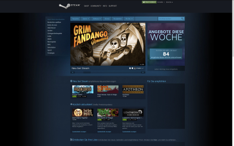

Steam
|  |
| Steam Valve |
Ein Übersichtsartikel zur Vertriebsplattform ist unter Steam zu finden.


Seiten in der Kategorie „Steam“:
Seiten mit Tag „Steam“¶
- Archiv/Spiele/Counterstrike-Source
- Benchmarks/Unigine
- Kategorie/Gog
- Spiele/Amnesia - The Dark Descent
- Spiele/And Yet It Moves
- Spiele/Anomaly 2
- Spiele/Anomaly Warzone Earth
- Spiele/Aquaria
- Spiele/Arx Libertatis
- Spiele/Baphomets Fluch
- Spiele/Bastion
- Spiele/Braid
- Spiele/Broken Age
- Spiele/Cave Story+
- Spiele/Cogs
- Spiele/Darwinia
- Spiele/Defcon
- Spiele/Don't Starve
- Spiele/Duke Nukem 3D
- Spiele/Dungeons of Dreadmor
- Spiele/Fieldrunners
- Spiele/Fortix 2
- Spiele/Frozen Synapse
- Spiele/Game Dev Tycoon
- Spiele/Gone Home
- Spiele/Gratuitous Space Battles
- Spiele/Grim Fandango
- Spiele/Hammerfight
- Spiele/Hammerwatch
- Spiele/Limbo
- Spiele/Lume
- Spiele/Multiwinia
- Spiele/Oil Rush
- Spiele/OpenRCT2
- Spiele/Osmos
- Spiele/Penumbra
- Spiele/Primordia
- Spiele/Proteus
- Spiele/Psychonauts
- Spiele/Revenge of the Titans
- Spiele/Rochard
- Spiele/Serious Sam - The First Encounter
- Spiele/Serious Sam - The Second Encounter
- Spiele/Serious Sam 2
- Spiele/Shank 2
- Spiele/Sir, You Are Being Hunted
- Spiele/SpaceChem
- Spiele/Spirits
- Spiele/Star Wars Jedi Knight II - Jedi Outcast
- Spiele/Star Wars Jedi Knight III - Jedi Academy
- Spiele/Steel Storm
- Spiele/Super Meat Boy
- Spiele/The Cat Lady
- Spiele/The Journey Down
- Spiele/The Swapper
- Spiele/Tiny and Big
- Spiele/To the Moon
- Spiele/Toki Tori
- Spiele/Torchlight 2
- Spiele/Towns
- Spiele/Train Fever
- Spiele/Trine 2
- Spiele/Uplink
- Spiele/VVVVVV
- Spiele/Waking Mars
- Spiele/Windward
- Spiele/World of Goo
- Spiele/X² - Die Bedrohung
- Spiele/X³ REUNION
- Spiele/Zen Bound 2
- Steam
- Steam Client unter Wine
- SteamCMD
- Trash/Spiele/Dungeons of Dreadmor-1
- Erstellt mit Inyoka
-
 2004 – 2017 ubuntuusers.de • Einige Rechte vorbehalten
2004 – 2017 ubuntuusers.de • Einige Rechte vorbehalten
Lizenz • Kontakt • Datenschutz • Impressum • Serverstatus -
Serverhousing gespendet von